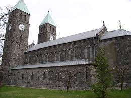
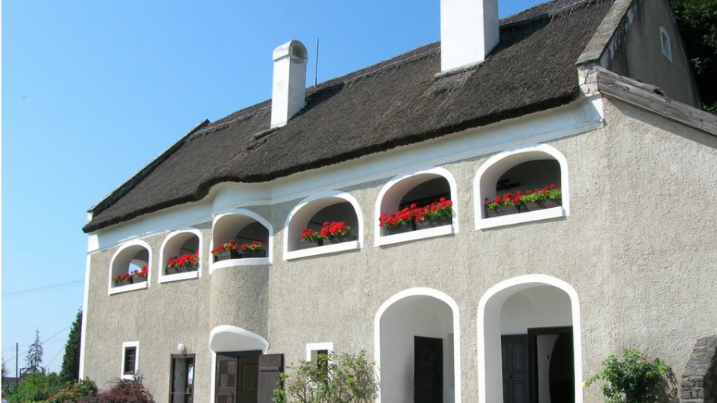
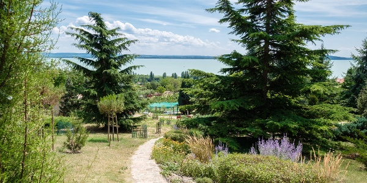
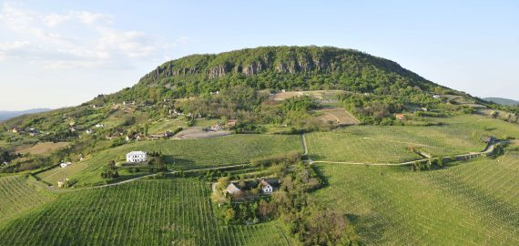

| Balatonfured | Siófok | Keszthely | Badacsonytomaj | Balatonalmádi | Tihany | Káptalanfured |
|---|
Badacsonytomaj város Veszprém megyében, a Tapolcai járásban. A Badacsony hegy a település területén fekszik, amelyet ezen kívül Tomaj központ és Badacsonyörs településrész, valamint a nagyrészt üdülőépületekből álló Badacsony településrész alkot. 2004. július 1-jén kapott városi rangot. A település eredetileg Szent István király korától az 1950-es megyerendezésig Zala vármegyéhez tartozott.
A 71-es főút mentén, a Balaton északi partjának nyugati részén, a Badacsony lábánál található. A település területén fekszik a Badacsony hegy nagyobb része, a település közigazgatási területét alkotja az ősi tomaji faluközpont és Badacsonyörs, valamint a nagyrészt szőlőterületekből és borházakból, vendéglőkből és üdülőépületekből álló Badacsony településrész, ez utóbbi az elhíresült vigalmi negyed.
A 71-es főút után a település legfontosabb útvonala a 7316-os út, amely még a badacsonyörsi településrészben indul, keresztülhalad Badacsonytomaj központján, majd Tapolca felé húzódik. További négy és öt számjegyű utak a településen: a Badacsony lábánál, de a parti útnál kicsit magasabban húzódó, Badacsonytördemicre vezető 7341-es út („Római út”), a Káptalantótira vezető 7344-es út, a Badacsonytól északra Badacsonytördemic felé vezető 73 104-es út és a tomaji városközpont főutcájaként húzódó 73 143-as út.
Szomszédos települések: Ábrahámhegy, Badacsonytördemic, Káptalantóti, Nemesgulács és Salföld.
Vonattal elérhető a Székesfehérvár–Tapolca-vasútvonalon. Vasúti megállói: Badacsonyörs (valamikor Kisörs), Badacsonytomaj és Badacsony (valamikor Badacsony-Hableány).
Vízi úton a Badacsony településrészen lévő, nyáron nagy forgalmú hajóállomáson és vitorlás kikötőn át közelíthető meg.
Területe már az ókorban is lakott volt, az ásatások felszínre hozták a hegytetőn egy vaskori település leleteit, megtalálták egy kelta település maradványait. A rómaiak egész biztosan termesztettek itt szőlőt, a Badacsony oldalán akkoriban is számos ültetvény volt.
A középkorból, nem egyházi birtok lévén, kevés feljegyzés maradt fenn a községről. Névadója állítólag egy besenyő vitéz, Urkund fia Tomaj volt, aki I. István korában birtokolta a területet. Első okleveles említése 1313-ból származik, Tomaj formában. Mindenesetre 1263-ban már remete kolostor állt itt, II. Pál veszprémi püspök oklevelében olvasható. A török hódoltság idején lakossága megfogyatkozott, 1550-ben plébániája is elhagyatva állt, de a források szerint a település folyamatosan lakott volt. Az itt élők ekkor is főleg szőlő- és gyümölcstermesztésből, halászatból éltek. A 18. század során kedvelt pihenőhellyé vált, bora kedvelt lett és sorra épültek itt a pincék és a borházak. Ismert a város hegykönyve és hegytörvényei. A Pálos kolostor égbe nyúló falairól 1851-ben Szerelmey Miklós ad hírt. A helyszínt 1887-ben Ádám Iván kanonok járja be és tárja fel. Tanulmánya 1888-ban jelenik meg az Archeológiai szemlében.
Badacsonyi Bazaltbánya Rt.-t Tószegi család és az Eszterházy Hitbizomány hozta létre. 1903-as megnyitásával a település új irányt vett, a lakosság száma megkétszereződött, elindult az iparosodás; A Balaton északi partján 1909-ben megindul a vasúti közlekedés. 1909-től lóvasút is járt a településen.
Badacsonytomaj 1911. január 1-jén lett nagyközség Zala megye törvényhatósági döntés alapján. Ekkor meghirdették a jegyzői állást, amelyre Nemesgulácsi adóügyi jegyző jelentkezett, és 1911. február 15-én kinevezték jegyzőnek. Vajda Elek (1879–1944) 1911-ben költözött a településre, melynek ezután nyugállományba vonulásáig, 1923-ig jegyzője volt. Vajda a Vöröskereszt 1915. február 15-én alapított badacsonytomaji egyletének első jegyzője is. Egykori lakóháza, melyet a községbe költözésekor építtetett, nyugállományba vonulása után, bővítésekkel előbb az elöljáróság, később a nagyközség tanácsának, illetve önkormányzatának székhelye volt, egészen 2011-ig. 2014 szeptemberében az új városháza földszintjén emléktábla utal Vajda Elek munkásságára .[4]
Az I. háborúban igen sok badacsonytomaji férfi lelte halálát. A háború után az országot ért hatalmas területvesztése során a kőbányák jelentős hányada a határon túlra került, így a természeti csodaként ismert Badacsony hegy csaknem teljes mértékben áldozatává vált Trianonnak. Komoly küzdelem folyt a természeti értékek megmentéséért, az akkori Parlamentben Herczeg Ferenc vezetésével, eredménytelenül sajnos. A bazaltkövet csillepályán szállították le a hegyről a Balaton parton lévő zúzó üzemben. A csillepálya tartóállványának rezgése, rázkódása miatt a Templom dombon 1344-ben épült Szent Imre templom szentélye és falai megrepedeztek, és veszélyessé vált a benne tartózkodás. Helyette épült a hegy bazalt köveiből Fábián Gáspár tervei alapján a Templom domb lábához Rott Nándor Püspöksége alatt, Varga Sándor plébánossága idején a Vallás alap finanszírozása mellett 1931 és 1932 között akkor még Európában egyedül álló r.k. neoromán stílusú Szent Imre templom. A település bírója ebben az időben vitéz Csala Gergely, jegyzője pedig Hajdú Lajos, majd 1936-tól Keresztúry János volt 1949-ig.
A polgári Magyarország megszületésekor, az első szabad önkormányzati választások idején, 1990 szeptemberében a település első polgármesterének Káloczi Kálmánt választották meg, aki 2002-ig töltötte be ezt a funkciót.
A bazaltbányászat 1965-ben befejeződött, de a hegy látványa és élővilága sajnos nagyon megsínylette a félévszázados bányászatot. A további károkat megelőzendő a térséget hamarosan tájvédelmi körzetté nyilvánították.
A település a hozzá tartozó Badacsonyörs (korábban Kisörs) és Badacsony (valamikor Hableány) településrészekkel együtt 2004. július 1-jén kapott városi rangot.
Román stílusú római katolikus Szent Imre templom
Szegedy Róza-ház múzeum (Szegedy Róza egykori lakhelye)
Folly Arborétum
Badacsony Hegy - sok túristaúttal, látnivalóval, és geológiai, természeti érdekességekkel. A hegyteton kiláto helyezkedik el, gyonyoru kilátással.
